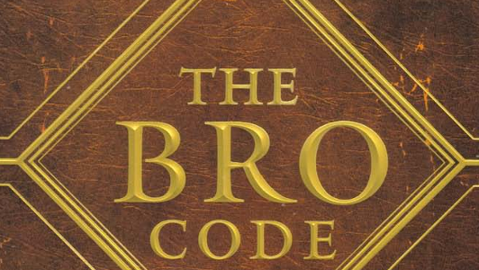

The Pineapple Incident
One of the show's most iconic mysteries.
In Season 1, Ted wakes up with a pineapple on his nightstand and no memory of how it got there.
- üçç The pineapple mystery was never fully resolved in the show, leaving fans to speculate.
- ü§î Barney claims he knows the story but refuses to tell Ted.
- üé¨ The episode is a fan favorite for its hilarious and chaotic storytelling.
The Playbook
Barney's legendary guide to picking up women.
Barney’s Playbook contains over 100 plays, each with a unique strategy to win over women.
- üìñ Famous plays include "The Lorenzo Von Matterhorn" and "The Scuba Diver."
- üî• The Playbook was eventually burned by Nora, Barney‚Äôs girlfriend at the time.
- üï∂Ô∏è Barney claims the Playbook is "a work of art."

Slap Bet
One of the gang's most iconic bets.
Marshall and Barney make a bet about Robin’s secret past, with slaps as the stakes.
- üëã Marshall wins the bet and gets to slap Barney 5 times, spread out over several years.
- üé• The bet leads to the reveal that Robin was a Canadian teen pop star.
- üòÇ The "Slap Bet" episode is considered one of the funniest in the series.

The Bro Code
Barney's guide to being a bro.
The Bro Code is a set of rules that govern the behavior of bros.
- üìú The code includes rules like "Bros before hoes" and "A bro is always entitled to do something stupid."
- ü§ù Barney and Ted co-wrote the Bro Code, but Barney takes all the credit.
- üî• The Bro Code was eventually turned into a real book.